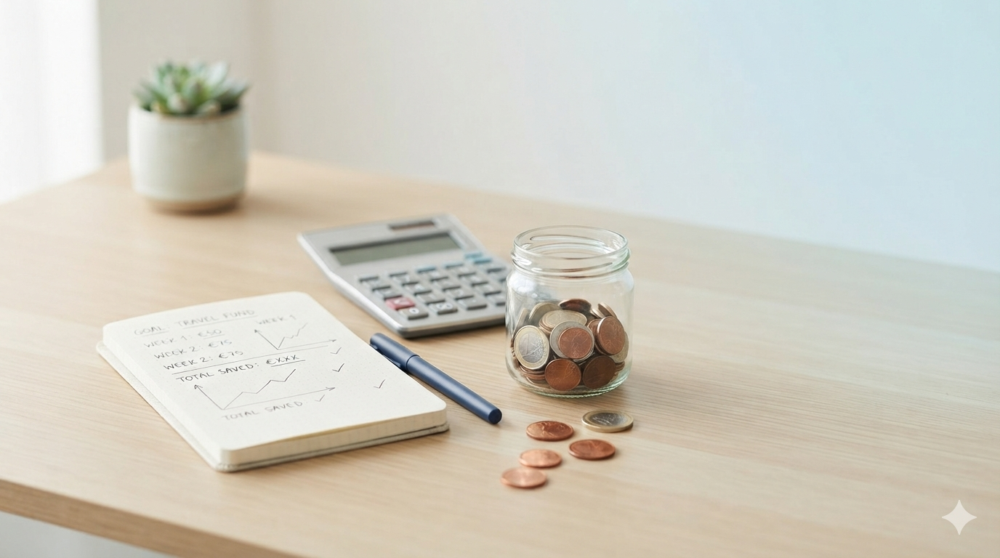

How to Set a Savings Goal You Can Actually Reach
Saving money is much easier when you know what you're saving for. Here's how to create a goal that works in real life, not just on paper.

"I should save more money" is a good thought, but it isn't really a plan.
It becomes much easier when you give your savings a purpose. Maybe you want a new phone, a vacation, a better computer, a car, some new furniture, or simply some money set aside for an unexpected expense.
Once you know what you're saving for, you can decide how much you need and how much you can realistically put aside.

You don't have to reach exactly 100% for the money you've saved to be useful.

Give your savings a purpose
Start by deciding what you're actually saving for.
Instead of creating a goal called "Savings", give it a specific purpose.
For example:
A specific goal gives you something concrete to work toward. It also makes it easier to decide whether you want to keep adding money to that goal or use your savings somewhere else.
Decide how much you need
Once you know what you're saving for, estimate how much money you will need.
This doesn't always have to be an exact number. Prices can change, you might find a better deal, or you might change your mind about what you want to buy.
Maria wants a new phone
Maria finds a phone she likes for €900. She already has €200 saved, so she doesn't actually need another €900. She needs another €700.

Think about when you would like to reach it
A target date can make a savings goal much easier to understand.
Imagine that Maria already has €200 and wants the phone in seven months.
If she spreads that over seven months:
Now she has something much more useful than simply saying "I need to save €900." She knows that saving around €100 each month would put her on track.
Make the plan realistic
This is where real life becomes important.
Maybe Maria looks at her budget and realizes that saving €100 every month is difficult. She has bills, food, transportation, and other things she needs to pay for.
She could still keep the €900 goal, but give herself more time.
A plan you can actually follow is usually better than a perfect plan you cannot maintain.
You don't always have to reach 100%
This is one of the most important things to understand about savings goals.
Let's go back to Maria and her €900 phone.
Imagine that she saves €700, but then decides she would rather not wait another few months to save the final €200.
She is now €700 closer to buying the phone than she was before.
She could wait and save the remaining €200. She could find the same phone at a lower price. She could decide to buy a different phone. Or, if it makes sense for her budget, she could combine the €700 she saved with another way of paying for the remaining amount, such as an installment plan.
Maria is already much closer to her goal.
The point of the goal was never to make a promise that she would definitely spend exactly €900. The goal gave her a way to build up €700 toward something she wanted.
Your savings can still be valuable even when you don't reach the original target.
Real life can change your goals
Sometimes you start saving for something and then realize that something else has become more important.
This is completely normal.
Alex has two savings goals
Alex might decide that the dental treatment is more important right now. Moving the €50 from the wand goal to the dental goal could be a perfectly reasonable decision.
The wand goal now has €0, but that is okay. Alex has simply decided that another goal is more important.
Your savings goals are allowed to change when your priorities change.

Be careful when moving money between goals
There is one thing worth keeping in mind when you have multiple savings goals.
Moving money from one goal to another doesn't create new money. It simply moves the progress from one goal to another.
If you move the €50 from the dental goal to the phone goal, your phone goal will look better, but your dental goal is now further behind.
Move it because you've decided that another goal is more important.
If something important comes up, such as a dental treatment, replacing a broken device, or another necessary expense, it can make sense to change your priorities.
But if you're simply moving money around so that one goal looks completed, you're probably just hiding the fact that another goal has fallen behind.
Track what actually happens
Once you've created your goals, track the money you actually put into them.
Maybe you planned to save €100 this month but only managed to save €70. That's useful information.
Maybe next month you save €150. That's useful too.
Over time, you can see what your real saving habits look like instead of relying on a plan that exists only in your head.
Every contribution moves the goal forward.
This is where a savings tracker becomes useful. You can see how much you've saved, how much remains, and which goals are currently the most important to you.
Saving for a vacation
Let's say Alex wants to take a vacation that he estimates will cost around €2,000.
He already has €500 saved and wants to travel in about ten months.
Saving around €150 each month would put Alex on track to reach €2,000 in ten months.
But suppose he reaches €1,700 and finds a cheaper vacation than he expected. He might not need the full €2,000 anymore.
Or maybe the trip costs more than expected. In that case, he can decide whether to keep saving, change the trip, or use another way to cover the difference.
The savings goal helped him prepare. It doesn't have to predict the future perfectly.
A savings goal is a guide, not a rule.
Give your savings a clear purpose.
Choose a target that makes sense for you.
Save what you can consistently.
You don't have to reach 100% for the savings to help.
Move money between goals when your priorities change.
Keep track of what you've actually saved.
Your savings are there to help you
The best savings goal is one that helps you make better decisions with your money.
Give your money a purpose. Set a target. Think about when you would like to reach it. Work out what you can realistically save and track what actually happens.
But don't feel like you have failed if you don't reach the exact target. Maybe you changed your mind. Maybe the price changed. Maybe another goal became more important.
Your savings are still yours, and you get to decide where they are most useful.
The important thing is to know where your money is, understand what you're saving for, and make those decisions intentionally.
Ready to give your savings a purpose?
Create your savings goals, track your progress, and keep your plans in one place.
Start Saving